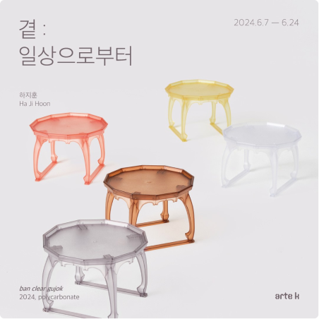

-
Blog
하지훈, 허승희, 박서희 《곁: 일상으로부터》 24.06.07 FRI - 24.06.24 MON
-
Instagram
글로리어스의 중심이 되는 인물인 파이와 조이 곁에는 종종 "Running late"라는 이름을 가진 말 캐릭터가 등장합니다.🐴 24.06.07 FRI - 24.06.24 MON
- Newsletter
-
Press
박서희 작가에게 도자기는 제작 과정에서 들인 수고와 노력이 결과물에 고스란히 드러나는 정직한 사물입니다. 조선백자를 24.06.07 FRI - 24.06.24 MON
-
Instagram
박서희 작가에게 도자기는 제작 과정에서 들인 수고와 노력이 결과물에 고스란히 드러나는 정직한 사물입니다. 조선백자를 현대적으로 재해석한 작업을 이어오고 있는 작가는 전통 성형기법인 24.06.07 FRI - 24.06.24 MON
- Recent Searches Delete All
-
캔디스 주
 이선근
개인전
이선근
개인전
- Recommended Searches
- 캔디스 주 이선근 Time 이정우 완벽한 차원 개인전 한소 데이비드 호크니 서안나